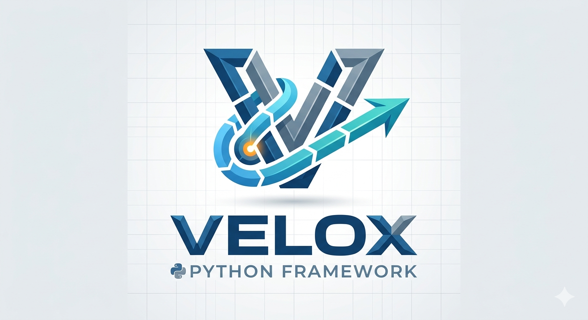

Documentação do Velox Framework

Velox — Fast Python Web Framework — WSGI + ASGI, zero dependencies
Velox é um framework Python web extremamente rápido sem dependências obrigatórias. Suporta ambos os modos:
WSGI/Threading — Execute sem dependências externas
ASGI/uvicorn — Suporte async com uvicorn
Rotas e URLs
Banco de Dados
Templates
Arquivos Estáticos
API Reference
Por que usar Velox?
Zero Dependencies — Sem pacotes externos para uso básico
Blazing Fast — Otimizado para performance
Sync + Async — Misture handlers sync e async no mesmo app
Modular — Use Blueprints para organizar rotas
WebSocket — Suporte WebSocket nativo (modo ASGI)
Pythonic — API limpa e intuitiva
ORM Integrado — Banco de dados com Model e Query Builder
Templates Poderosos — Herança, macros, filtros
Arquivos Estáticos — Servir CSS, JS, imagens
Exemplo Rápido
from velox import Velox
app = Velox(__name__)
@app.get('/')
def home(req, res):
return app.render('index.html', {'nome': 'Mundo'})
@app.get('/api/dados')
async def api(req, res):
data = await buscar_dados()
res.json(data)
app.run()
Instalação
pip install velox-framework
Ou com extras:
pip install velox-framework[asgi] # Com uvicorn
pip install velox-framework[full] # Todas features
pip install velox-framework[dev] # Desenvolvimento